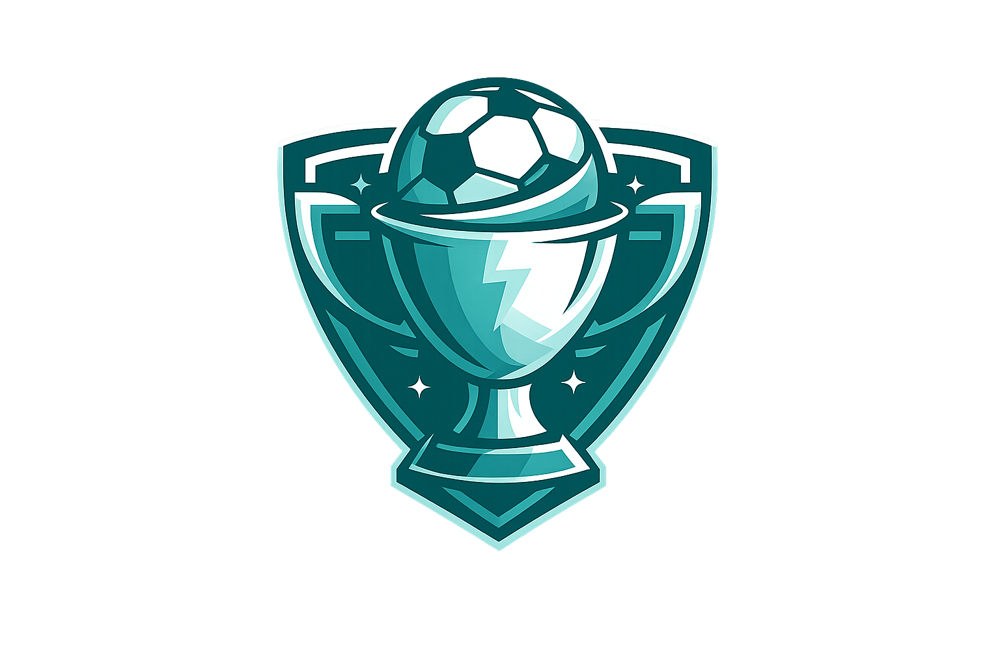

Welcome to Sports Manager! Developed by IEU students as a CE 216 course project, this desktop simulation game is designed to make you feel like a real manager for your team and challenge your strategic skills. This manual provides comprehensive guidance on installation, user interface overview, and core gameplay mechanics to ensure you have the best possible experience. We hope you enjoy playing!
With Sports Manager, you can become the true manager of your own team. From the main screen, you can start a custom league by selecting your preferred sport and setting your custom manager name. Your main objective in this newly created league is to manage your assigned team and fight your way to the championship.
Throughout your journey, you can make strategic player and tactical changes for your team while keeping an eye on other matches across the league. When it is time for your match, you can follow the events in real time, experiencing the true excitement of a match day. Once the league concludes, you can either finish your game or you can start a brand new league. Furthermore, you can save your progress and continue your game later on whenever you wish!
The Main Menu is the first screen displayed when Sports Manager is opened. This screen allows you to start a new game, load a previously saved game, open the help manual, or exit the application.
At the top of the screen, the Sports Manager logo and title are displayed. Below them, there is a text field where you must enter your manager name. After entering your manager name, select the sport you want to manage from the sport selection menu. The available sport options are Football and Handball. The selected sport determines which type of league, teams, players, tactics, and match rules will be generated.
To begin a new game, click the “START GAME” button. If the manager name field is empty, a warning pop-up will appear and the game will not start until a valid name is entered. The “LOAD GAME” button allows you to continue from a previously saved game. If a saved game exists, clicking this button will load the saved progress and open the main game interface. If there is no saved game available, a warning message will be shown. The “HELP MANUAL” button opens the user manual so that players can review the controls, screen explanations, and gameplay instructions while using the application. The “EXIT” button closes the application.
Once you select your sport and start the game, you will be greeted with common control buttons and information panels that wrap around the core screens (Match Schedule, Team Management, and League Standings). These controls allow you to play your matches, save your progress and exit the game.
In the top-left corner of the screen, you can see your manager's name, while the top-right corner displays your selected sport and the current week. Right below this information is a navigation bar designed to help you switch between different game screens. Using this bar, you can navigate through three different screens:
In the bottom left corner of the screen, you can see the details of your upcoming match. Right next to this is the "Save and Exit" button, which allows you to save your progress at any time and quit, letting you resume exactly where you left off later. In the bottom right corner, you will find the "Start Match" button to begin your team's next game.
Important Note : If you click the “Start Match” button without having enough “Starter” players selected, a warning message will appear on your screen. To proceed and begin the match, you must navigate to the Team screen and assign the required number of players to the “Starter” role.
Some leagues may consist of an odd number of teams. In such cases, each week one of the teams in the league will not have a scheduled game, resulting in a BYE week. If it is your team's BYE week, the upcoming match section in the bottom-left will display "No match this week (BYE)", and the "Start Match" button will be replaced by a "Next Week" button. You can click this button to skip directly to the following week.
When all scheduled fixtures are completed, the season officially comes to an end. At this stage, the section in the bottom left that normally shows the upcoming match remains intact. However, to reflect the end of the season the text displayed in this section is changed to "League Finished" and the "Start Match" button is replaced by a "New League" button. You can click this "New League" button to reset the standings and player statistics, allowing you to start a fresh season with the same teams.
The first screen you encounter when starting the game is the Team screen. This tab is designed for you to see team related information and manage your squad. You can access all these features from the same screen. However, you will need to scroll down to view some of the content.
At the very top of the Team screen is a panel displaying your team's details. The left side of this panel features your team's logo and name, while the right side shows your head coach's name and portrait.
The Players table is located right below the team information. This table allows you to manage all your players. It displays the names of all players in the team, their status (Starter or Substitute), their injury status and how many weeks it will take for them to return if the player is injured.
In the "Status" column, player's status information is controlled via a dropdown menu. You can instantly change a player's status by selecting your desired option from this menu. By clicking the “i” button located on the far left of each player, you can view all their detailed attributes. Don't forget to scroll through this table to see all the players in your squad!
All available tactics for your chosen sport are displayed in this section. Your team's currently active tactic is indicated by the selected radio button on this table. You are only allowed to use one tactic at a time. If you wish to change your team tactic, simply make your selection using these small buttons. Your choice instantly updates your team's tactic.
At the very bottom of the Team screen, you will find your team's match statistics. From here, you can observe the total number of matches your team has played, as well as how many they have won, lost, and drawn.
The League tab is your central hub for tracking the overall progress of the entire season. Keeping a close eye on this screen is crucial for understanding the broader landscape of the tournament.
When you navigate to this tab, you will find a comprehensive table displaying the complete fixture list for the entire league. This table allows you to monitor all matchups happening across the tournament. It displays the Home Team, Away Team, Week, and final Scores for every single game.
At the far right of the fixtures table, you will find the "Events" column. Clicking the "Show" button next to any completed match in the league will open a detailed pop-up window. This allows you to scout your rivals by reviewing every chronological event from their matches, including goals, yellow/red cards, and player injuries.
At the top left of this screen, you will notice a "WINNER" label. Throughout the active season, this will display "PENDING". Once the final week is fully simulated and the season concludes, this label will automatically update to proudly declare the championship-winning team.
To view the actual league standings, you must use the "Season Results" button located in the top right corner of the screen. Pressing this button will open a dedicated pop-up window containing the detailed performance summary of the league. This is where you can view the accumulated vital statistics for every team, including total Matches Played, Wins, Draws, Losses, and Points.
While the League tab shows the big picture, the Match Schedule tab focuses strictly on your team’s specific journey. This is where you review your past results and look ahead to prepare for your upcoming opponents.
The main table on this screen filters the league's massive schedule to show only the matches your specific team plays. You can easily view whether you are the Home Team or Away Team, and check exactly which Week the match takes place. For matches that have already been played, the score columns will automatically update to reflect the final result. For future matches, these score areas will remain blank or show a dash ("-") until the starting whistle blows.
Just like the League tab, this table features an "Events" column. Clicking the "Show" button next to any of your finished matches will open the detailed events pop-up window. This is essential for reviewing your own team's performance, providing a chronological breakdown of all goals, disciplinary actions, and player injuries that occurred during your games.
The Match Day screen is where you play and follow your team’s current match. You can access this screen by clicking the “Start Match” button from the common navigation area when your team has a scheduled match.
At the top of the screen, the current match period is displayed. In the middle section, you can see the home team, away team, team logos, current score, and the match events area. The match events area lists everything that happens during the match in chronological order. Before the match starts, the main action button displays “PLAY FIRST HALF”. Clicking this button simulates the first half of the match and generates match events such as goals, cards, injuries, saves, missed shots, attacks, turnovers, or other sport-specific actions depending on the selected sport. Before the match starts, you can close and exit this screen by pressing the “BACK” button. However, once the match begins, the back button will be disabled, and you will not be able to leave this screen until the match ends.
After the first half is completed, the screen enters half-time. At this point, additional match management options become available. The “SUBSTITUTE” button allows you to make a live substitution, while the “TACTICS” button allows you to change a team’s tactic before the second half begins. After completing your half-time decisions, click “PLAY SECOND HALF” or “PLAY PERIOD” to continue the match.
The tactic change pop-up allows you to adjust your team’s strategy during half-time. In this window choose one of the available tactics from the dropdown menu, and click “Confirm Tactic” to apply the change.
The live substitution pop-up is used to replace a player during the match. First, select the player who will leave the match from the “Player OUT” list and select the substitute player from the “Player IN” list. After clicking “Confirm Substitution,” the substitution is added to the match events. If you have run out of substitutions for the match, you will receive a warning when you click the substitution button. You can see your remaining number of substitutions at the top of the screen.
After the match is completed, the “FINISH WEEK” button becomes available. This button completes the remaining matches of the current week and updates the league standings. The “SUBSTITUTE” and “TACTICS” buttons are no longer used after the match is finished.
When the league reaches its final stage, the result window displays the top teams in the final standings. From this window, you can review the best-performing teams and finish the current season.